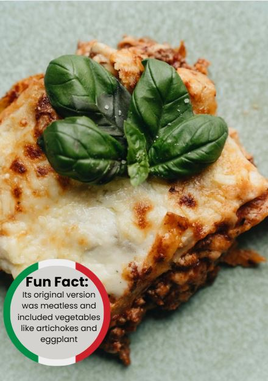

|  |
Ingriedenti2 olive oil 750g lean beaf mince 90g pack prosciutto 800g passata 200ml hot beef stock Nutmeg 300g fresh lasagne sheets White sauce 125g ball mozzarella |
Ricetta-To make the meat sauce, heat 2 tbsp olive oil in a frying pan and cook 750g lean beef mince in two batches for about 10 mins until browned all over. -Finely chop 4 slices of prosciutto from a 90g pack, then stir through the meat mixture. -Pour over 800g passata or half our basic tomato sauce recipe and 200ml hot beef stock. Add a little grated nutmeg, then season. -Bring up to the boil, then simmer for 30 mins until the sauce looks rich. -Heat the oven to 180C/160C fan/gas 4 and lightly oil an ovenproof dish (about 30 x 20cm). -Spoon one third of the meat sauce into the dish, then cover with some fresh lasagne sheets from a 300g pack. Drizzle over roughly 130g ready-made or homemade white sauce. -Repeat until you have three layers of pasta. Cover with the remaining 390g white sauce, making sure you can’t see any pasta poking through. -Scatter 125g torn mozzarella over the top. -Arrange the rest of the prosciutto on top. Bake for 45 mins until the top is bubbling and lightly browned. |